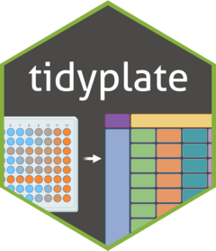

Generates a microwell plate shaped csv or excel file from tibble or dataframe
Source:R/generate_plate.R
generate_plate.RdDataframes or tibbles are not good for visual inspection of microwell plate
shaped data. generate_plate() helps the user by transforming dataframe or
tibble into a microwell plate data. It does the opposite of what
tidy_plate() does to a plate data.
Arguments
- x
A dataframe or tibble.
- well_id
A character string or an integer which points to the column containing the well ids.
- plate_type
A specific integer (6, 12, 24, 48, 96, 384, 1536) indicating the type of microwell plate.
- file
A character string with the filename of the output file with the path and type of exported file. Only csv or xlsx files are supported.
Examples
file_path <- system.file("extdata", "tidy_12_well.csv", package = "tidyplate")
tbl <- read.csv(file_path)
temp_file <- tempfile(fileext = ".csv")
plate_12 <- generate_plate(tbl,
well_id = "well",
plate_type = 12,
file = temp_file)